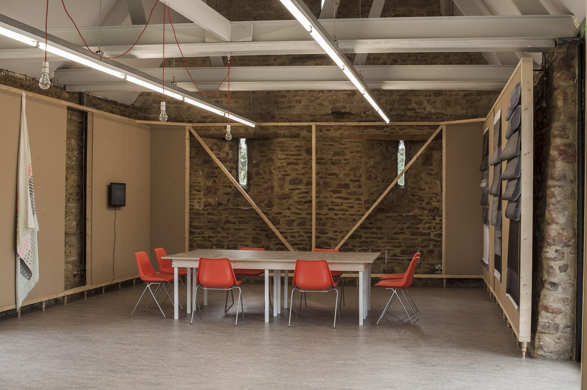

I was approached by M&W to create the interior for Artworks MK which they had designed but due to cost restrictions were not project managing. I created several modular wall panels which were laminated with forbo pinboard which fitted within a timber frame.The gallery building is listed so there were to be no fixings into the original stone walls, so we created wooden dowels which fitted into the brickwork which lined the tops of the walls and fixed discrete bespoke metal plates between the dowels and our structure.
The local woodturners group created over 50 small legs which were fitted to the frames to raise them off the floor.
